#### Wachstum ist ein Prozess schöpferischer Zerstörung. "The first rule of any technology used in a business is that automation applied to an efficient operation will magnify the efficiency. The second is that automation applied to an inefficient operation will magnify the inefficiency." - Bill Gates "We always overestimate the change that will occur in the next two years and underestimate the change that will occur in the next ten. Don't let yourself be lulled into inaction." - Bill Gates // Jukka Nikki, Programmer, Accidental business thinker
#### [AI coding evolution](https://medium.com/aimonks/ai-coding-from-code-completion-to-knowledge-alignment-6d4c5a8ee669) 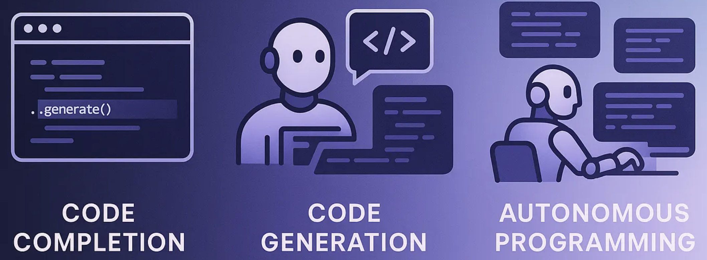 - Code completion (IDE plugins) - Prompt engineering (within IDE) - Monolithic generation (Vibe coding) - Context-aware generation (agents.md) - AI Pair programming (Plan mode) - Spec-driven development (SDD)
#### [AI code maintainability Study 12/25](https://arxiv.org/abs/2507.00788) - [Wesley Reisz](https://www.linkedin.com/in/wesreisz/overlay/1765385622340/single-media-viewer/?profileId=ACoAAAH2i1wB6vCpA9r3XNtn7_QvOcxZOPD1t2o) "Code written with AI assistance was no harder to change, no easier to change, no worse in quality and no better in quality. From a downstream perspective, AI didn't break anything. (..) AI users were about 30% faster to get to a solution. (..) Habitual AI users were closer to 55% faster. (..) AI tends to produce boring, idiomatic, unsurprising code. And boring code is good. (..) As always tools matter, but how we use them matters more. " - Dave Farley
#### [90/90 rule revisited]() 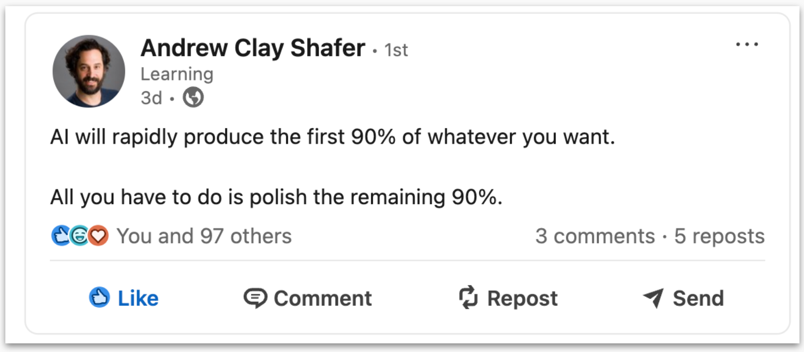 "The first 90 percent of the code accounts for the first 90 percent of the development time. The remaining 10 percent of the code accounts for the other 90 percent of the development time." - Tom Cargill
#### [Developers working day]() 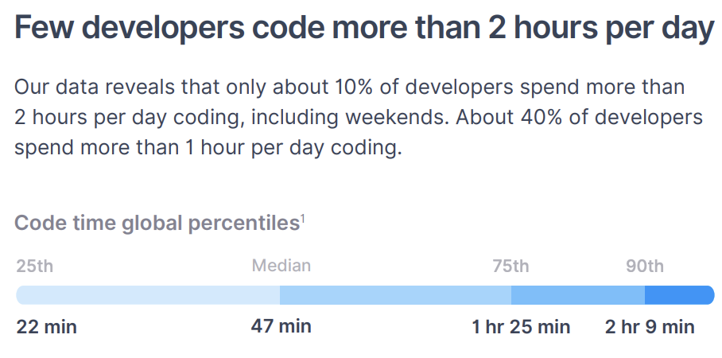 Developers spend fraction of their time coding. Documenting, reviewing, 1:1 and team meetings, learning, planning, .. leave 1 - 2 hours (90 day average) or ca. 20% - 30% of the day for actual coding.
#### [AI project Tasks / time spent](https://www.geocod.io/code-and-coordinates/2026-01-21-hand-chiseling-code/) 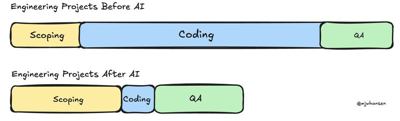 - Context and Prompt are continuously refined. Code is reviewed and tested after every generation. - Scoping (defining intent / domain rules) and QA (reviews, manual testing) are not part of coding, but take significant amount of time. - Missing requirements (FR/NFR) during scoping increase amount of iteration cycles and QA effort.
#### [Knowledge paradox](https://addyo.substack.com/p/the-70-problem-hard-truths-about) Seniors - use AI to accelerate what they already know well - build prototypes, skeletons and automate tasks Juniors - try to use AI to learn what to do - build fragile systems they don't fully understand AI is like eager junior developer in your team. AI needs to be constantly supervised and corrected. Seniors have the knowledge to do that, juniors don't.
#### [Coding / total project effort]() 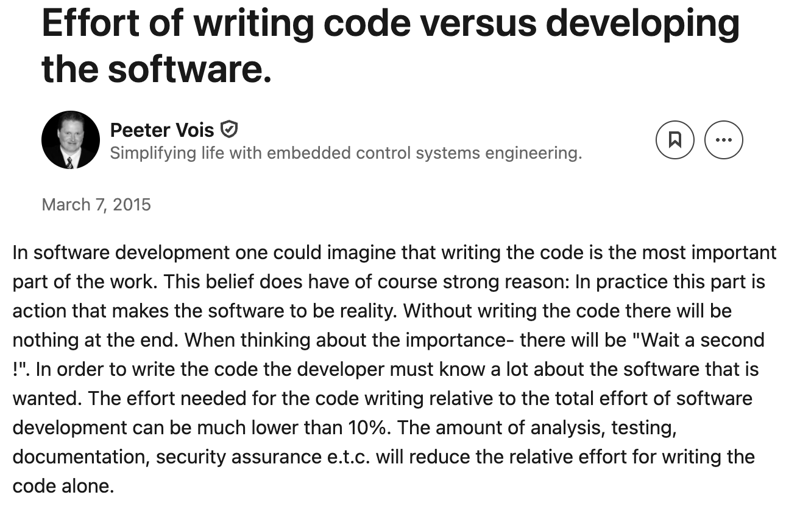 Coding: 10% - 20% of project effort. AI's 30% - 50% added efficiency => 3% - 10% faster project. Radically better productivity requires process changes.
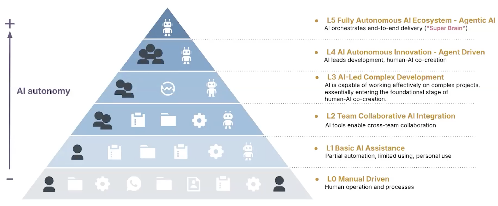 "Human" to "Superbrain" scale of AI autonomy. Current tools are at "Assistance" (L1) level, where AI suggests code, but human decides what to accept. Support for team collaboration (L2) is emerging.
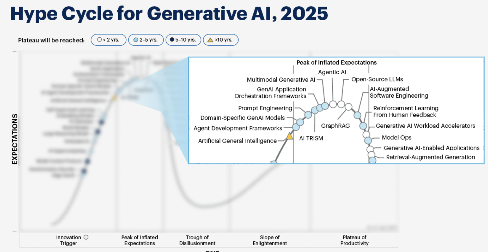 Ai-augmented SW development, currently at the peak of inflated expectations, requires 2-5 years for tools to mature and best practices to emerge.
### [Physics of software development](https://medium.com/@ryanwhitwell/ai-exposes-the-physics-of-software-delivery-833290d71a94) "When execution becomes cheap, the dominant costs move upstream: problem framing, scope boundaries, success criteria, and assumptions about risk and reversibility become king. Work that can’t be clearly described can’t be safely accelerated. Work that can’t be decomposed can’t be meaningfully delegated, whether to people or to machines (I’m looking at you agents)."
### [Factories, co-creators, co-pilots](https://www.mckinsey.com/capabilities/quantumblack/our-insights/the-change-agent-goals-decisions-and-implications-for-ceos-in-the-agentic-age#/) 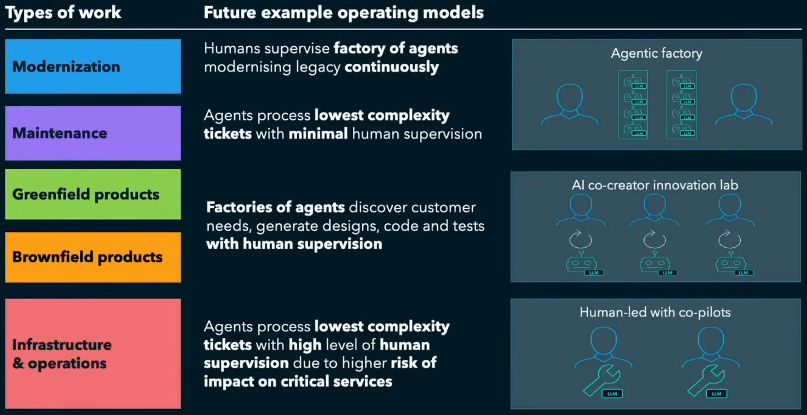 Agents have several roles. Depending on task they may be independent, lightly or heavily supervised.
### [Workflows: Riper-5](https://github.com/johnpeterman72/CursorRIPER) 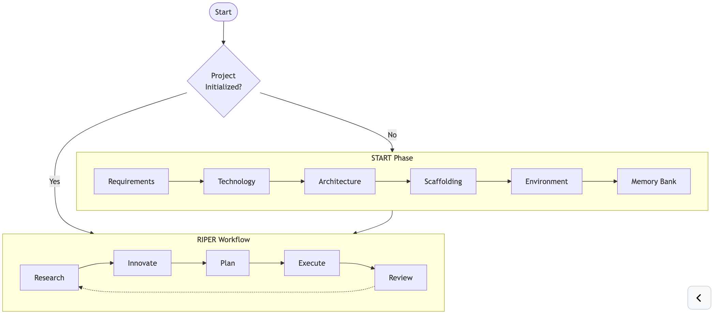 Tool independent workflow. RIPER stands for Research, Innovate, Plan, Execute, Review.
### [Modes: Riper-5]() <img alt="nc 1990" src="images/riper-5-modes2.png" width="80%"> Ai tools can be set to different modes, depending on task and workflow phase.
#### [Context Engineering: Tactical vs. Strategic](https://intent-driven.dev/knowledge/plan-mode-vs-sdd/) Tactical context engineering (Plan Mode) focuses on immediate task context, while strategic context engineering (Spec Driven Development) builds long-term knowledge structures. Plan mode is supposed to fit better for greenfield solo projects, whereas spec driven development (SDD) is better for team projects with evolving requirements. Spec driven development requires more upfront investment in context creation and maintenance, but can yield better long-term results.
#### [Plan Mode: Creating Context](https://www.eesel.ai/blog/claude-ai-coding-assistant) 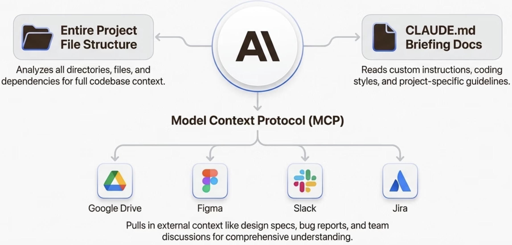 - Existing codebase is important part of context - Instruction files (e.g. Claude.md) define constraints. - MCP servers integrate external data sources. External sources can provide specifications, task descriptions, ui mockups, ..
#### [Plan Mode: Workflow](https://www.eesel.ai/blog/claude-ai-coding-assistant) 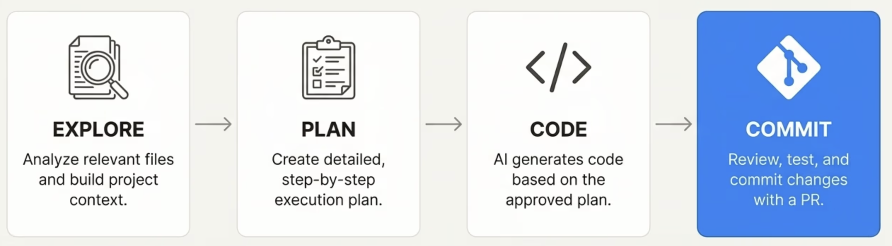 - Collect context from relevant sources - Create plan, refine until accepted by developer - Generate code and run tests based on plan - Review and commit results to codebase One shot pair programming: AI is driver, developer is navigator. Plan is realized when code is committed.
#### [Spec-Driven Development (SDD)](https://www.infoq.com/articles/spec-driven-development/) 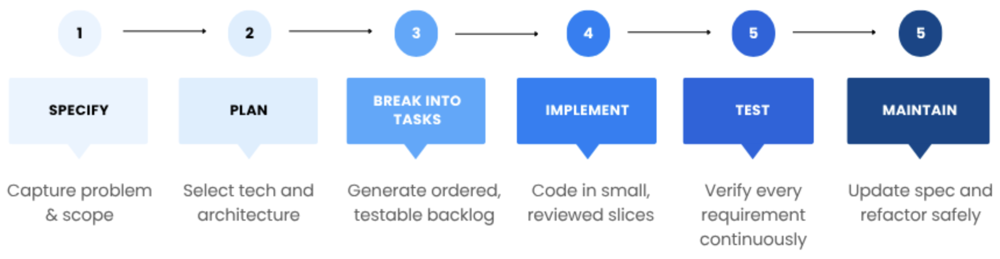 ["Spec-driven development means writing a “spec” before writing code with AI. The spec becomes the source of truth for the human and the AI."](https://martinfowler.com/articles/exploring-gen-ai/sdd-3-tools.html) Spec has aspects like architecture, domain models, requirements, and is refined over time.
#### [Specification over code](https://www.infoq.com/articles/spec-driven-development/) SDD represents a fundamental shift in how software systems are architected, governed, and evolved. At a technical level, it introduces a declarative, contract-centric control plane that repositions the specification as the system's primary executable artifact. Implementation code, in contrast, becomes a secondary, generated representation of architectural intent.
#### [Code is king vs. specs rule](https://www.nitorinfotech.com/blog/spec-driven-development-explained/) 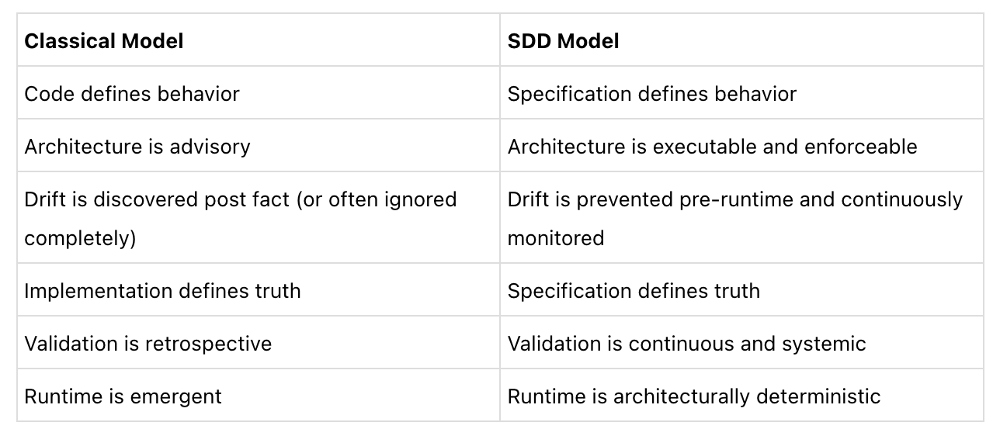 For decades, software architecture has operated under a largely unchallenged assumption that code is the ultimate authority => Result: Architecture drift, technical debt, misalignment with business goals.
### [Possible SDD Use-cases](https://www.nitorinfotech.com/blog/spec-driven-development-explained/) 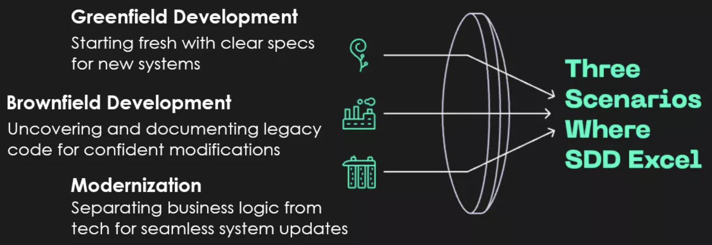 - develop new or renew (code=>spec, spec=>code). - change technologies, replatform or rearchitect. - maintain alignment between implementation and evolving business requirements.
### [SDD Levels](https://martinfowler.com/articles/exploring-gen-ai/sdd-3-tools.html) - Spec-first: A well thought-out spec is written first, and then used in the AI-assisted development workflow for the task at hand. - Spec-anchored: The spec is kept even after the task is complete, to continue using it for evolution and maintenance of the respective feature. - Spec-as-source: The spec is the main source file over time, and only the spec is edited by the human, the human never touches the code.
#### Generating once is nice, but not enough <img alt="nc 1990" src="images/sdd-levels.png" width="80%"> - Quality of results rely on input spec quality. - Level defines process AI tool is able to support.
#### [SDD Context: Specs & Memory banks](https://www.geocod.io/code-and-coordinates/2026-01-21-hand-chiseling-code/) <img alt="nc 1990" src="images/sdd-overview.png" width="60%"> - Memory bank stores shared definitions. - Specs store feature-specific definitions. - Together they create context for code generation.
#### [Context / Layer / responsibility](https://www.nitorinfotech.com/blog/spec-driven-development-explained/) 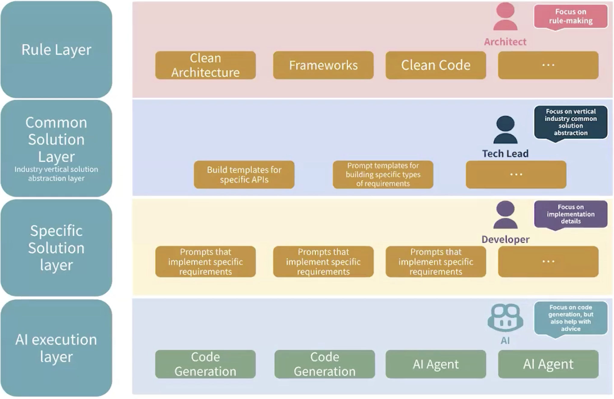 Governance of context is shared responsibility.
### [AI is non-deterministic](https://www.thoughtworks.com/en-de/insights/blog/agile-engineering-practices/spec-driven-development-unpacking-2025-new-engineering-practices) "Spec drift and hallucination are inherently difficult to avoid. We still need highly deterministic CI/CD practices to ensure software quality and safeguard our architectures." - Liu Shangqi “All signs so far show that if you have well-constructed code, modular approaches, and all the other good practices we tend to emphasize, that makes it much easier for the AI to work with and minimizes issues down the line.” - Martin Fowler
#### [Go fast, go safe](https://www.youtube.com/watch?v=wVyQn6QRcT4) 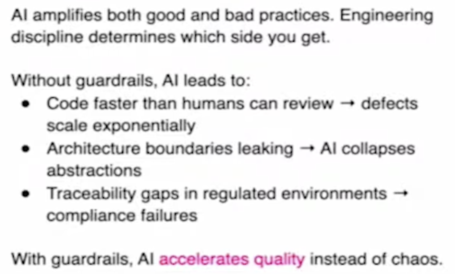 AI amplifies existing software development practices. Practices like modular architecture, CI/CD pipelines, automated testing, linting, reviews, etc. are more important than ever.
#### [SDD Workflow](https://www.nitorinfotech.com/blog/spec-driven-development-explained/) 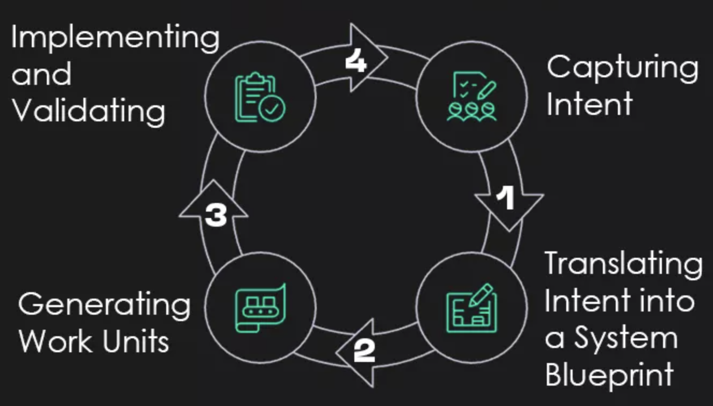 there’s a lack of consensus on the ‘correct’ spec-driven development workflow and what exactly a good spec should look like in the context of AI-assisted coding.
#### [Spec driven development using Polarion ALM](https://mcp.so/server/PolarionMcpServers/peakflames) 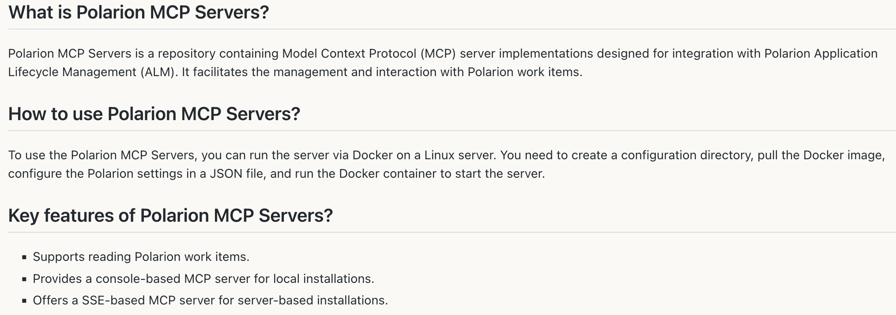 - Integrate Polarion using OSS MCP Server. - Reference to work items used as part of spec. - Define how work items should be interpreted.
#### [when the spec becomes the primary artifact](https://www.nitorinfotech.com/blog/spec-driven-development-explained/) - Every developer needs to think like an architect. - Organizations must adapt operationally. - Architectural clarity must be prioritized. - Teams need training to build specification literacy. Writing or refining specifications requires the same level of systems thinking that was once limited to senior technical roles. Current teams might lack the necessary skills and mindset, leading to potential adoption challenges.
#### [Thoughtworks Techradar: Assess](https://www.corporate-rebels.com/blog/right-kind-of-wrong-intelligent-failure) 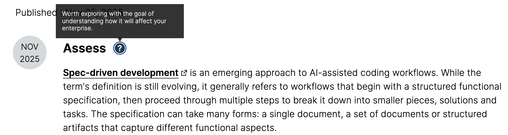 "by 2028, teams that consistently apply an ensemble of AI-powered tools across the SDLC will achieve 25–30% productivity gains — up from the 10% delivered by code-generation-focused approaches in 2024." - [Gartner](https://www.gartner.com/en/articles/ai-in-software-engineering)
#### Add value, not (only) speed 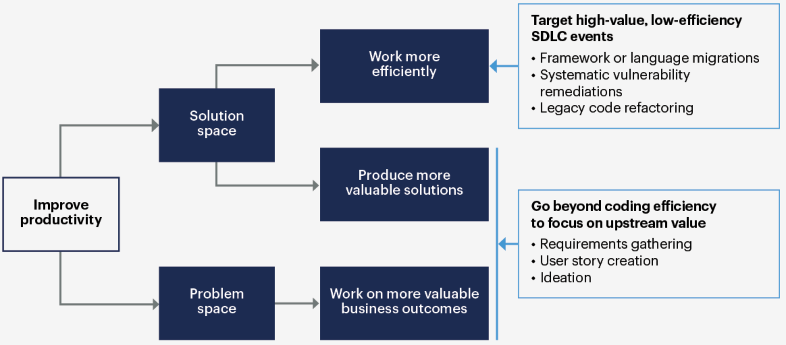 “The key question isn’t ‘What can AI do?’ but ‘What should AI do?’” - John C. Havens
#### [Recommendation: Experiment & fail cleverly](https://www.corporate-rebels.com/blog/right-kind-of-wrong-intelligent-failure) 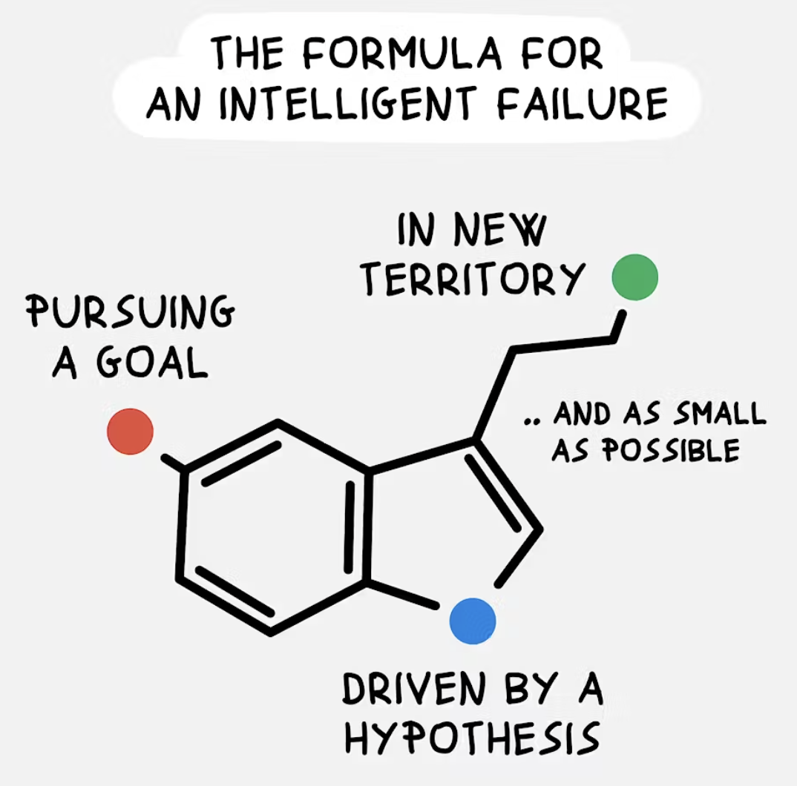 "It’s impossible to calculate the wasted time and resources created by our reluctance to take the smart risks that lead to progress." - Amy Edmondson
### Challenges - SDD requires cultural change and shifts power dynamics in teams and organizations. - Tooling and processes are immature and evolving rapidly, requiring continuous learning. - Gaps in specs coverage and quality are illuminated early, not at the end of development. - 70% of solution may come fast and effortless, 30% might turn out hard and frustrating. - Existing codebases may not be suitable for SDD adoption, and first projects may be risky.
### Summary - Spec-driven development (SDD) uses AI to generate code from structured specifications. - Role of developer shifts from code to describe intent and architecture in specs. - SDD can (if done right) improve code quality, maintainability, and alignment with business goals. - Successful adoption of SDD requires new workflows, tools, and mindsets, but also management support. - SDD does not work on all projects equally well. Careful experimentation is needed.
#### What would you attempt to do if you knew you wouldn’t fail? "Im Prozess der schöpferischen Zerstörung entstehen Situationen, in denen viele Firmen sterben, die nichtsdestotrotz in der Lage gewesen wären, eifrig und nützlich fortzubestehen, wenn sie diesen einen Sturm überstanden hätten." - Joseph A. Schumpeter "The essential point to grasp is that in dealing with capitalism we are dealing with an evolutionary process." - Joseph A. Schumpeter
#### Final thoughts “Remember that code is really the language in which we ultimately express the requirements. We may create languages that are closer to the requirements. We may create tools that help us parse and assemble those requirements into formal structures. But we will never eliminate necessary precision — so there will always be code.” ― Robert C. Martin
#### SDD adoption: Start here. - Greenfield projects without legacy constraints. - Well-defined domains with clear requirements. - Teams open to experimentation and new practices. - Modular architecture for incremental adoption. - Type- & null-safe, garbage collected language. - Backend (no visuals) might be easier than frontend. - Controls like automated build pipeline exist.
#### [SDD and Double diamond]() 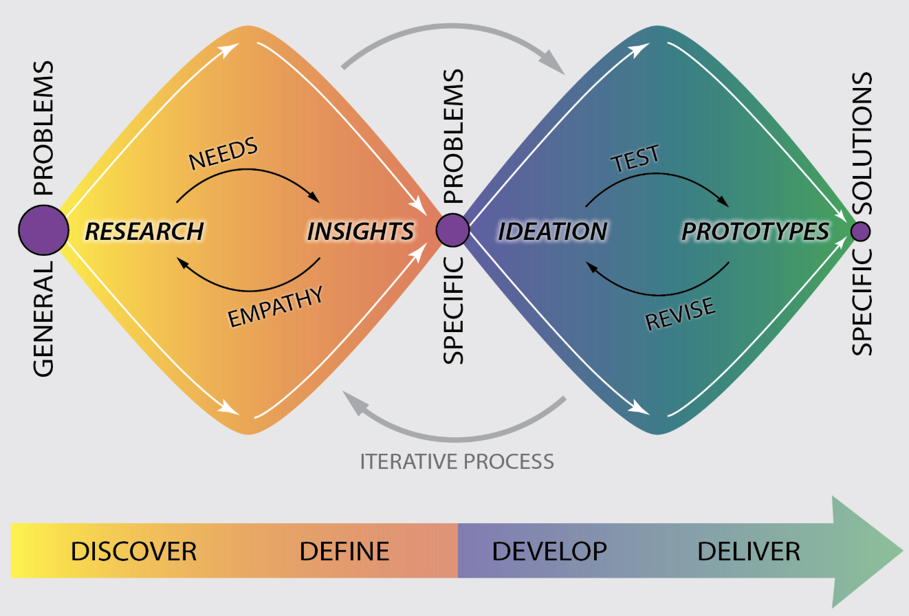 - Spec can be created at product discovery. - Define can produce working generated prototype. - Develop and deliver refine prototype to product. Reverse double diamond: create working solution first, then start research and collect insights.
#### [SDD Hypothesis](https://www.nitorinfotech.com/blog/spec-driven-development-explained/) Businesses that rely solely on AI-generated code without structured specs accumulate hallucinated logic, inconsistent patterns, and unpredictable failures. But those that adopt SDD will shift from code ownership – where engineers fight to keep implementations aligned to intent ownership – where specifications drive the entire lifecycle.
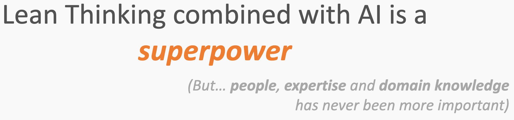 We may have reached tipping point for AI-augmented software development. We need to learn how to get over the AI chasm and build right products right way. 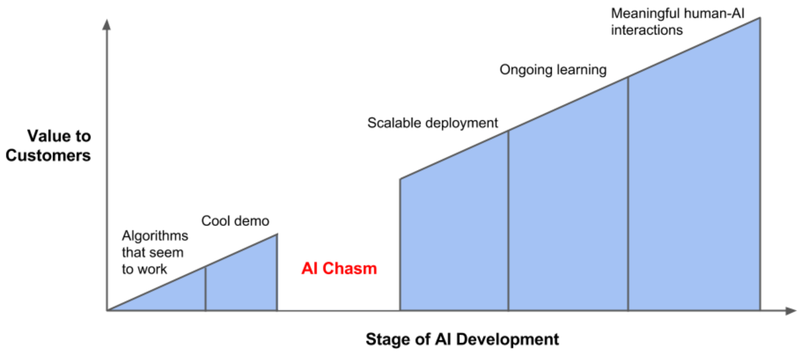
#### Sloppy inputs => AI slop 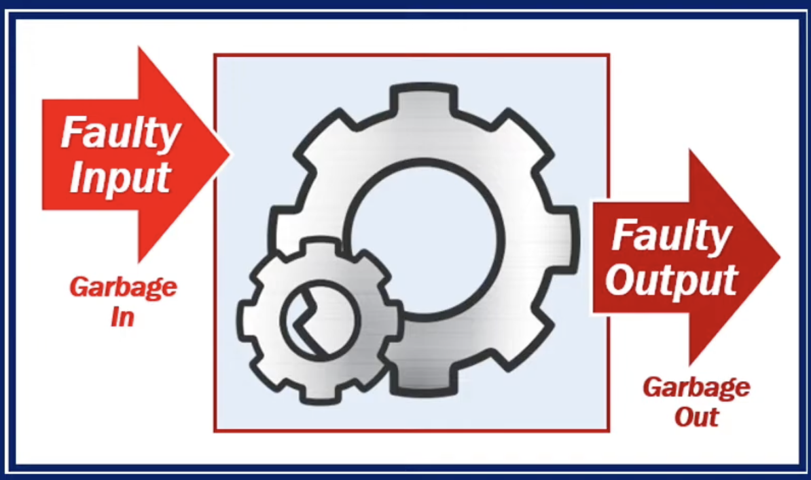 ["On two occasions I have been asked, "Pray, Mr. Babbage, if you put into the machine wrong figures, will the right answers come out?" ... I am not able rightly to apprehend the kind of confusion of ideas that could provoke such a question."](https://en.wikipedia.org/wiki/Garbage_in,_garbage_out) — Charles Babbage
#### DISCLAIMER “Life can only be understood backwards; but it must be lived forwards.” ― Søren Kierkegaard - To understand AI one needs to experiment .. - Experimenting means failing well for a goal .. - Failures should be small, backed by hypothesis .. - Each experiment teaches something new .. - And prepares you for next experiment ..
#### Codegen 1.0 / Rules & templates - code from model (MDD, Model driven development, e.g. Enterprise Architect, IBM Rhapsody) - code from architecture (MDA, Model driven architecture, e.g. ArchiMate) - code from domain-specific language, often custom syntax (external DSL, e.g. Xtext, JetBrains MPS) Deterministic, mature, but limited adoption. Tools either proprietary or not feasible for general use (learning curve, license costs).
#### Codegen 2.0 / AI-assisted development - Assistants (e.g. Github CoPilot, OpenAI Codex, Google Gemini, Jetbrains AI) - Prototype generators (e.g. Figma Make, Miro AI, v0) - Toolsets (e.g. Google Antigravity, Kilo AI, Roo-Code, Claude Code) - Code from spec (e.g. GitHub SpecKit, AWS Kiro, Tessl Framework, Gemini Cli with Conductor) Tools are emerging rapidly, but still experimental. No standard practices. Same challenges as in traditional coding (quality, security, maintainability, ..)
#### Codegen 1.0 & 2.0 synergy - Codegen 1.0 can generate boilerplate code as well as Codegen 2.0 inputs. - Codegen 2.0 can transform Codegen 1.0 outputs and orchestrate codegen 1.0 tools usage. It's possible to combine both approaches for better results. Custom MCP servers can be created to wrap Codegen 1.0 tools, for example with Jetbrains Koog.ai.